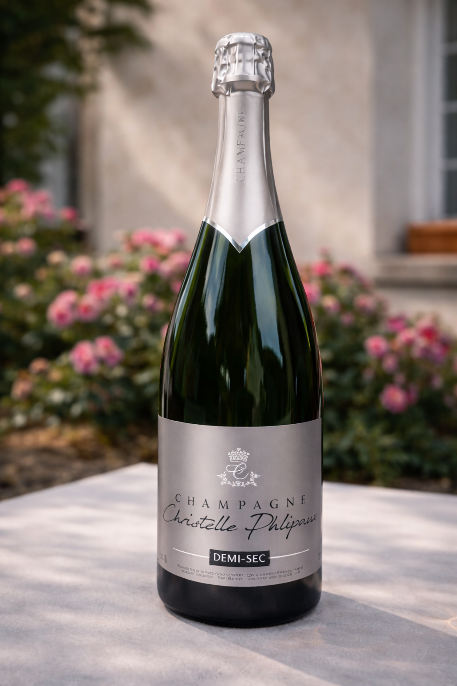

Propriété à Channes • Service 6 à 8°C
Commander Demi-Sec en direct
Le Demi-Sec est la cuvée la plus ronde de la maison. Sa fraîcheur lui permet d’accompagner un plat ou un dessert sans alourdir la fin du repas.
Pour foie gras, fruits ou brunch, sans alourdir le verre.
StyleAmple, fraîche, sans lourdeur
À tableFoie gras, fruits, brunch
Service6 à 8°C • magnum disponible
Maturité du raisin
La douceur garde sa place parce que la fraîcheur reste au
centre.
